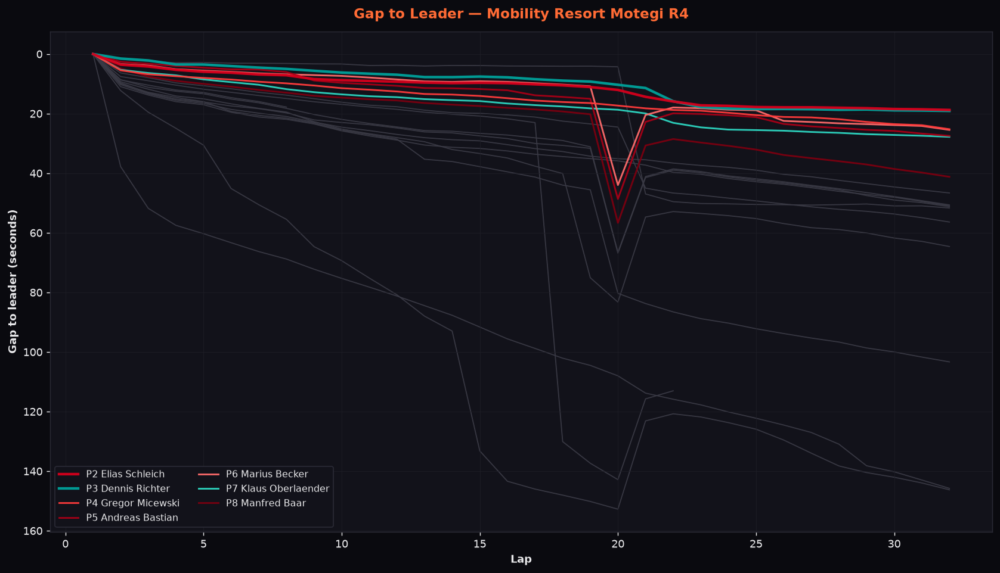
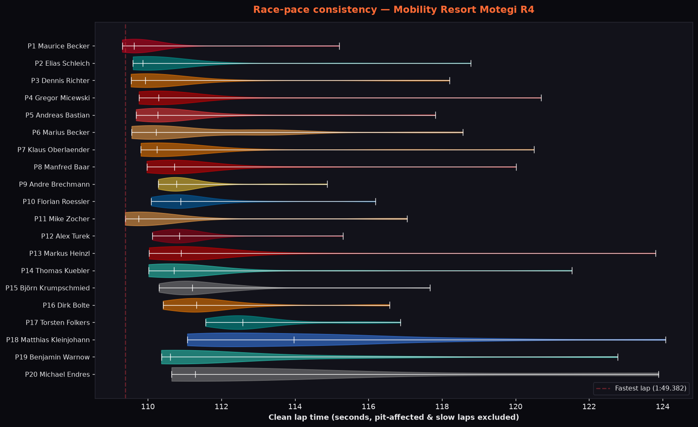
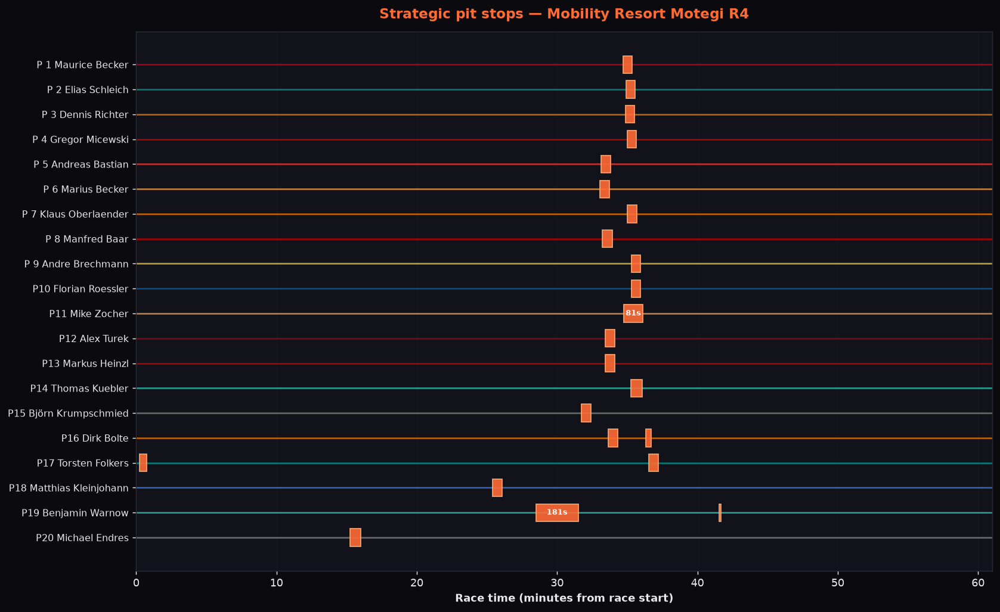
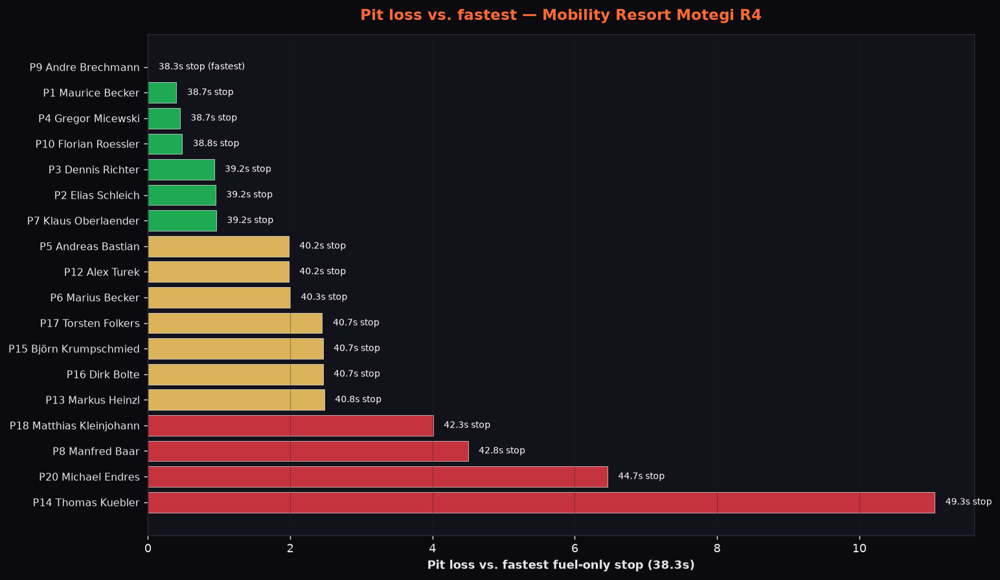
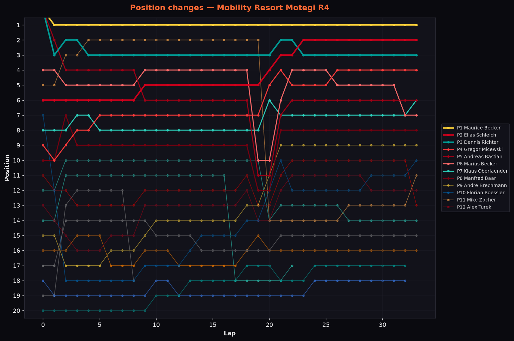
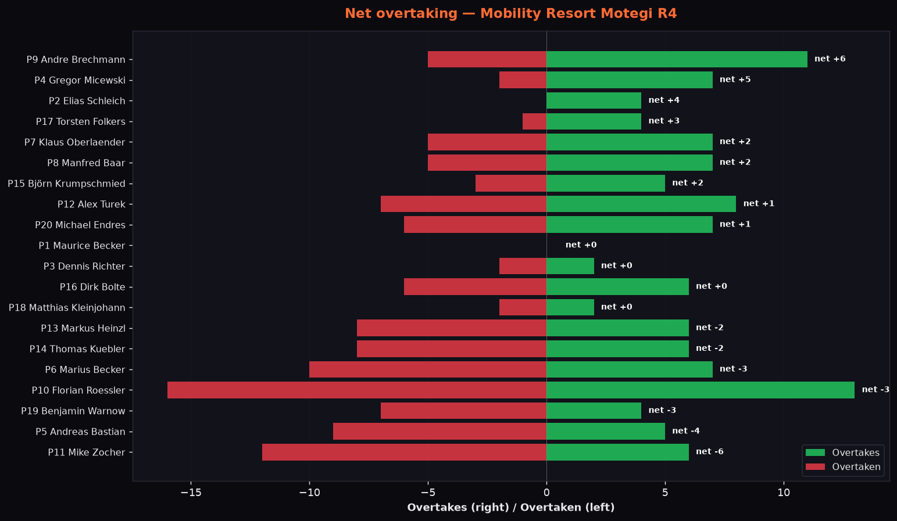
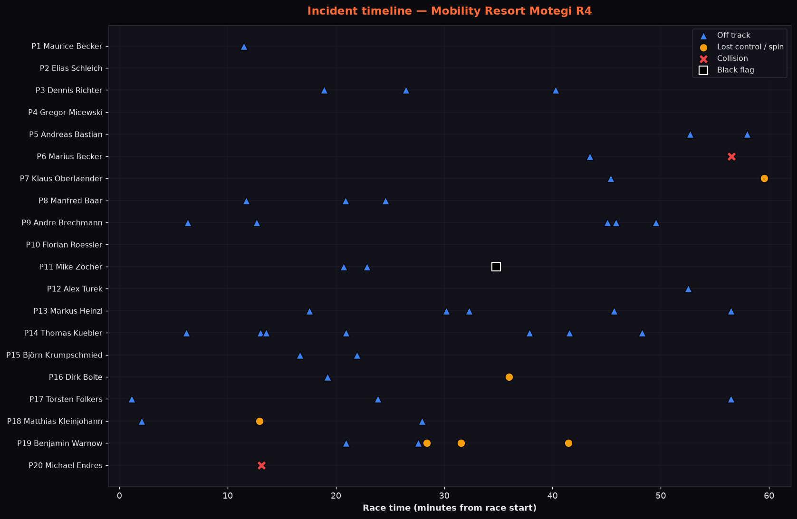
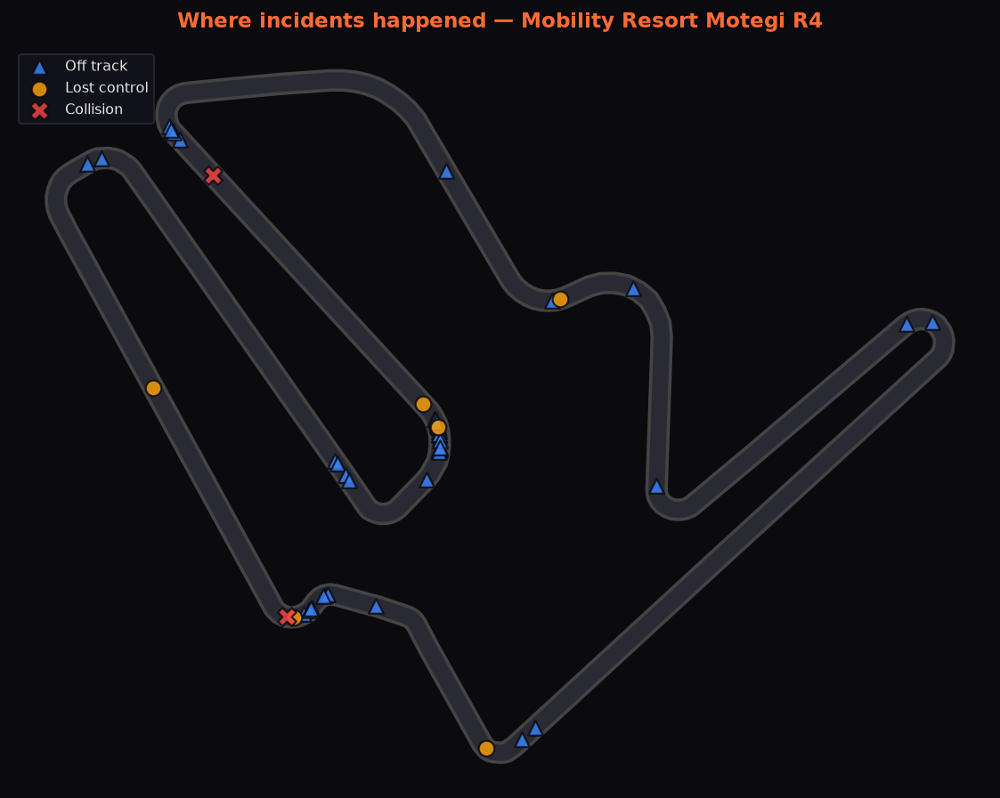
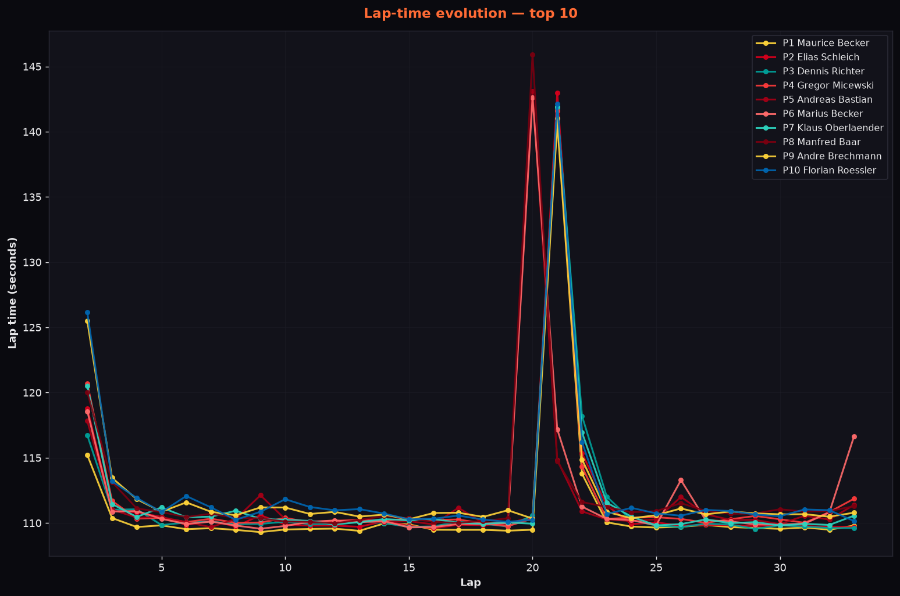
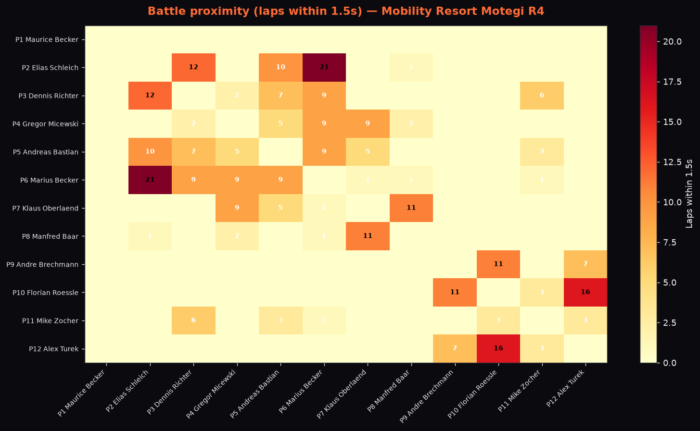

Mobility Resort Motegi (Grand Prix)
2D telemetry replay — the 60-minute race compressed to 90 seconds. The circuit map is the real Motegi Grand Prix course (4.801 km), which shares its pit lane with the oval.
By the Numbers
Maurice Becker — lights to flag
Pole, all 33 laps led and the win — his second lights-to-flag victory in a row after Zandvoort. Only Mike Zocher stayed within reach, about 4 s back, until his penalty.
18.640 seconds
He was 2.8 s ahead after five laps, 3.8 s by lap 12 and 4.1 s before the stops. With Zocher out of the way he led by 15.8 s after the pit cycle and 18.6 s at the flag.
Becker on pole, 1:49.121
Two sessions, AM first, then Pro. Becker took pole on his last lap, just 0.049 s ahead of AM driver Andreas Bastian, who had been stuck in the gravel on his out-lap. Richter, Marius Becker and Zocher completed the top five.
Gregor Micewski — 0.835
#08 (NEON Simsports Purple, Pro) went from ninth to fourth with seven overtakes on three incident points. He is now level on 118 points with Becker at the top of the Pro championship.
Maurice Becker in Pro, Bastian in AM
Andreas Bastian won AM in fifth overall, ahead of Manfred Baar and Florian Roessler, and takes the AM championship lead. In Pro, Elias Schleich finished second ahead of Dennis Richter by 0.39 s.
Zocher: from second to 11th
Mike Zocher ran second for 18 laps and set the fastest lap, 1:49.382. A black flag for speeding at pit entry, served with his stop (81 s stationary instead of about 39), dropped him to 14th; he recovered to 11th.
Laps 18–21, 38.3–42.8 s
Most of the field made its fuel stop on laps 18–21; Kleinjohann came in early on lap 14. Brechmann was quickest at 38.3 s, Becker and Micewski took 38.7 s. Kuebler went off at pit entry (49.3 s). Folkers and Bolte stopped twice, and Warnow needed 181 s of repairs before he disconnected.
Dry, 21 °C, 20 starters
Dry, air 21 °C, no cautions. There were only 20 starters — 9 Pro, 11 AM — with a strength of field of 2268. Benjamin Warnow (lap 22) and Michael Endres (lap 8) dropped out after disconnecting.
Data Views

Becker's line is the axis for all 33 laps. Zocher held second about 4 s behind until lap 19; the deep V on laps 19–21 is the pit cycle, which distorts the gaps until everyone has stopped. Schleich and Richter finish 0.39 s apart, 18.6 s down.

This shows the spread of clean laps, with pit and out-laps removed. The front of the field ran within a few tenths of each other; Zocher's 1:49.382 on lap 18 was the quickest single lap of the race.

Each bar is one stop with its stationary time. The regular stops fall between laps 18 and 21. The long bars are Zocher (81 s, served together with his black flag) and Warnow (181 s, repairs); Folkers came in on lap 1 and Bolte made a second, short stop after going off. Cool-down entries after the flag are excluded.

This is stationary time against the shortest regular stop, Brechmann's 38.3 s. Seven cars were within one second of it. Kuebler lost 11 s after going off at pit entry. Zocher's penalty stop and Warnow's repair stop fall outside the fuel-stop window and are not shown. Stationary time only, not net strategic loss.

Becker is a straight line at P1. Zocher's line drops from second to 14th on laps 20–21 when he serves his penalty. Brechmann climbs steadily from 15th to ninth.

Green bars are places gained on track and red bars places lost. Brechmann leads at +6 from 11 passes, ahead of Micewski (+5) and Schleich (+4, never passed). Roessler has the most moves in both directions after his lap-1 drop; Zocher's −6 is the penalty.

These are logged off-tracks, spins and contacts over the race, plus Zocher's black flag at minute 35. Endres' contact came shortly before he disconnected; Warnow's spins run from minute 28 to 41. The official incident points in the table come from the iRacing result.

This shows where the logged contacts, spins and off-tracks happened, projected onto the Motegi Grand Prix course.

These are top-10 lap times by lap. The bump around laps 19–21 is the stop phase.

This counts laps spent within 1.5 s of each other, for the top 12. Schleich–Marius Becker is the darkest square at 21 laps, then Roessler–Turek at 16 and Schleich–Richter at 12. Becker's row is empty: nobody got near him.
Race Highlights
Maurice Becker repeated his Zandvoort performance at Motegi. He took pole by 0.049 s on his final qualifying lap, led every one of the 33 laps and won by 18.640 s. For the first half of the race Mike Zocher was the only driver within reach, holding second about four seconds back and setting the fastest lap. Then he was black-flagged for speeding at pit entry, served the penalty with his stop and fell to 14th. Becker said afterwards that Zocher had made him sweat until his pit-lane mistake.
That handed second to a long fight between Elias Schleich and Dennis Richter. Schleich, who had spent 21 laps within 1.5 s of Marius Becker, got ahead in the pit cycle and held off Richter to the flag by 0.39 s. Gregor Micewski came from ninth to fourth and was Driver of the Day. In AM, front-row starter Andreas Bastian won the class in fifth overall and took the AM championship lead. Andre Brechmann made the most passes of the night, from 15th to ninth.
Full Classification
| Pos | # | Driver | Car | Cls | Laps | Best Lap | Gap | Inc | Pts | Result |
|---|---|---|---|---|---|---|---|---|---|---|
| 1 | 49 | Maurice Becker | Porsche 911 GT3 R (992) | PRO | 33 | 1:49.400 | — | 6 | 35 | Finished |
| 2 | 22 | Elias Schleich | Mercedes-AMG GT3 2020 | PRO | 33 | 1:49.595 | +18.640s | 2 | 33 | Finished |
| 3 | 63 | Dennis Richter | McLaren 720S GT3 EVO | PRO | 33 | 1:49.540 | +19.035s | 8 | 31 | Finished |
| 4 | 08 | Gregor Micewski | Ferrari 296 GT3 | PRO | 33 | 1:49.757 | +28.048s | 3 | 29 | Finished |
| 5 | 921 | Andreas Bastian | Porsche 911 GT3 R (992) | AM | 33 | 1:49.680 | +29.400s | 7 | 27 | Finished |
| 6 | 14 | Marius Becker | McLaren 720S GT3 EVO | PRO | 33 | 1:49.559 | +32.364s | 5 | 25 | Finished |
| 7 | 51 | Klaus Oberländer | McLaren 720S GT3 EVO | PRO | 33 | 1:49.810 | +33.732s | 6 | 23 | Finished |
| 8 | 581 | Manfred Baar | Ferrari 296 GT3 | AM | 33 | 1:49.971 | +44.070s | 4 | 21 | Finished |
| 9 | 82 | Andre Brechmann | Lamborghini Huracán GT3 EVO | PRO | 33 | 1:50.284 | +47.971s | 10 | 19 | Finished |
| 10 | 141 | Florian Roessler | BMW M4 GT3 EVO | AM | 33 | 1:50.092 | +51.488s | 3 | 17 | Finished |
| 11 | 01 | Mike Zocher | McLaren 720S GT3 EVO | PRO | 33 | 1:49.382 FL | +51.918s | 4 | 15 | Finished |
| 12 | 198 | Alex Turek | Porsche 911 GT3 R (992) | AM | 33 | 1:50.125 | +53.771s | 10 | 13 | Finished |
| 13 | 151 | Markus Heinzl | Ferrari 296 GT3 | AM | 33 | 1:50.036 | +56.441s | 9 | 11 | Finished |
| 14 | 173 | Thomas Kuebler | Mercedes-AMG GT3 2020 | AM | 33 | 1:50.022 | +58.541s | 10 | 9 | Finished |
| 15 | 666 | Björn Krumpschmied | Chevrolet Corvette Z06 GT3.R | AM | 33 | 1:50.304 | +67.095s | 7 | 7 | Finished |
| 16 | 334 | Dirk Bolte | McLaren 720S GT3 EVO | AM | 33 | 1:50.412 | +106.391s | 7 | 5 | Finished |
| 17 | 471 | Torsten Folkers | Mercedes-AMG GT3 2020 | AM | 32 | 1:51.567 | +1 lap | 10 | 4 | Finished |
| 18 | 998 | Matthias Kleinjohann | BMW M4 GT3 EVO | AM | 32 | 1:51.073 | +1 lap | 11 | 3 | Finished |
| DNF | 32 | Benjamin Warnow | Mercedes-AMG GT3 2020 | PRO | 22 | 1:50.367 | +11 laps | 10 | 2 | DNF |
| DSQ | 999 | Michael Endres | Aston Martin Vantage GT3 EVO | AM | 8 | 1:50.646 | +25 laps | 3 | 0 | DSQ |
Classification, the Pro/AM split, points, car numbers and the Driver of the Day are from the official CAS League Scoring (CLS) round result. Grid, gaps, best laps, laps led and incident points come from the iRacing event result (subsession 89342879). Charts and the 2D replay are built from the in-sim iCASControl telemetry log, which also recorded Zocher's black flag; the reason for it (speeding at pit entry) is from the broadcast. The pit charts show stationary service time, not net strategic gain. The incident charts show logged telemetry events, which undercount the official incident points in the table. Folkers and Kleinjohann are classified one lap down; Warnow (DNF) and Endres (DSQ, below the minimum distance) both disconnected.